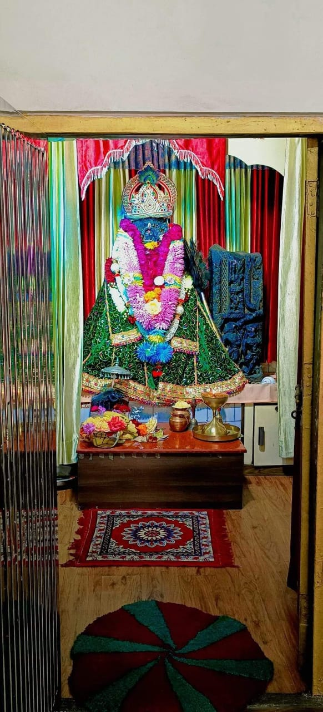
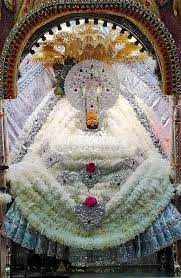
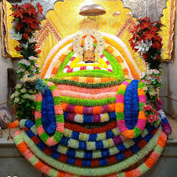
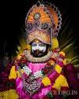
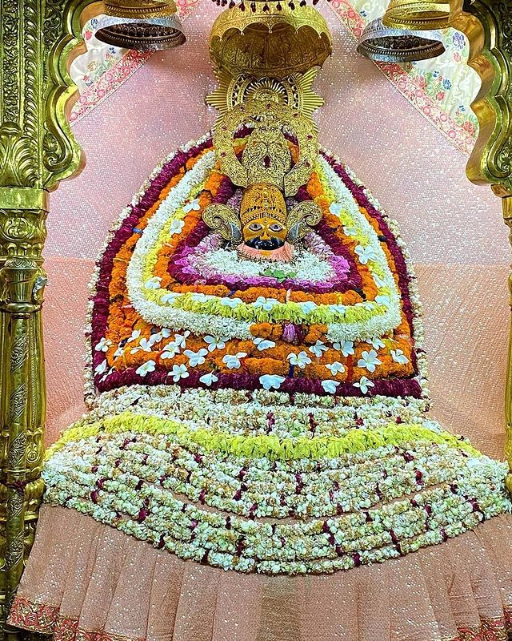
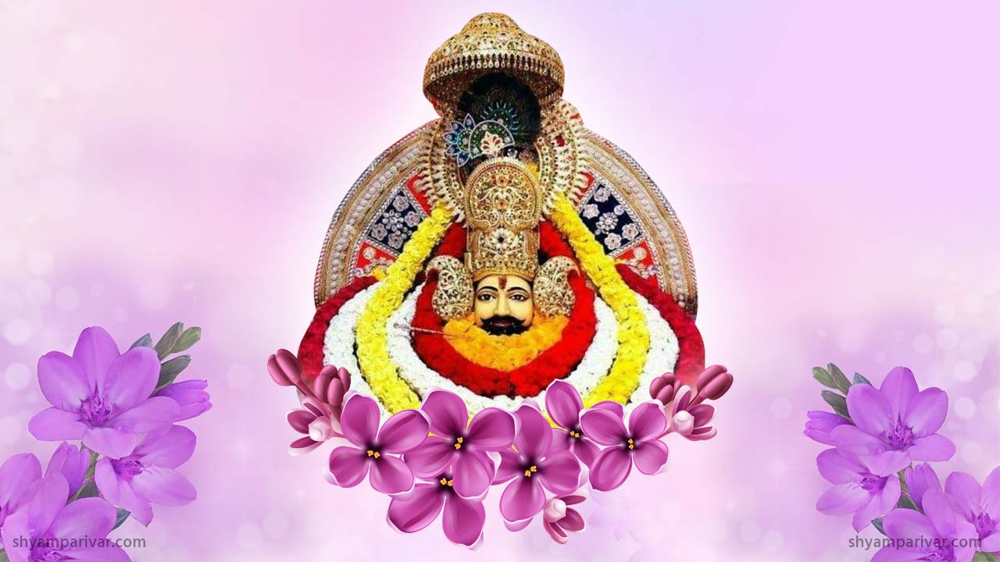
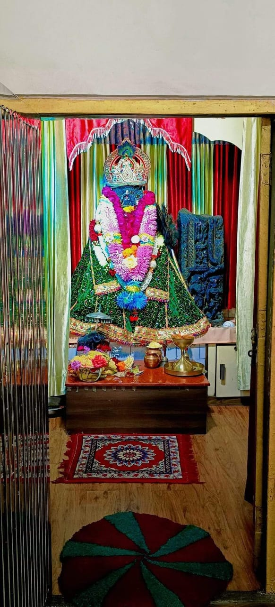
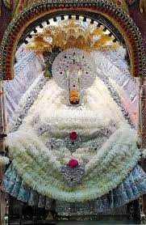
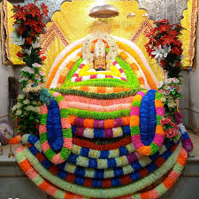
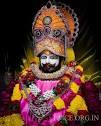
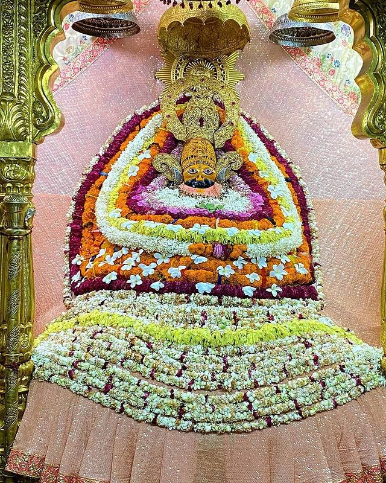
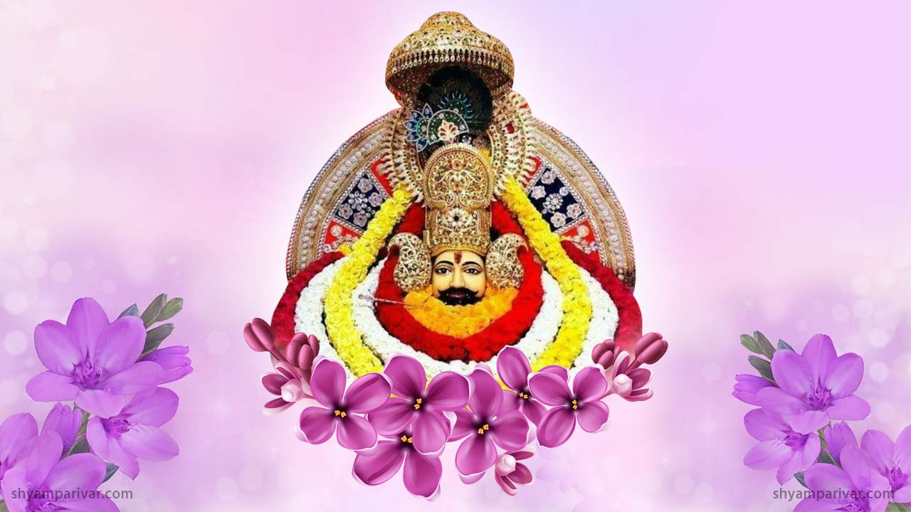
हिन्दू धर्म के अनुसार, खाटू श्याम जी ने द्वापरयुग में श्री कृष्ण से वरदान प्राप्त किया था कि वे कलयुग में उनके नाम श्याम से पूजे जाएँगे। बर्बरीक जी का शीश खाटू नगर (वर्तमान राजस्थान राज्य के सीकर जिला) में दफ़नाया गया इसलिए उन्हें खाटू श्याम बाबा कहा जाता है। कथा के अनुसार एक गाय उस स्थान पर आकर रोज अपने स्तनों से दुग्ध की धारा स्वतः ही बहा रही थी। बाद में खुदाई के बाद वह शीश प्रकट हुआ, जिसे कुछ दिनों के लिए एक ब्राह्मण को सूपुर्द कर दिया गया। एक बार खाटू नगर के राजा को स्वप्न में मन्दिर निर्माण के लिए और वह शीश मन्दिर में सुशोभित करने के लिए प्रेरित किया गया। तदन्तर उस स्थान पर मन्दिर का निर्माण किया गया और कार्तिक माह की एकादशी को शीश मन्दिर में सुशोभित किया गया, जिसे बाबा श्याम के जन्मदिन के रूप में मनाया जाता है। मूल मंदिर 1027 ई. में रूपसिंह चौहान और उनकी पत्नी नर्मदा कँवर द्वारा बनाया गया था।
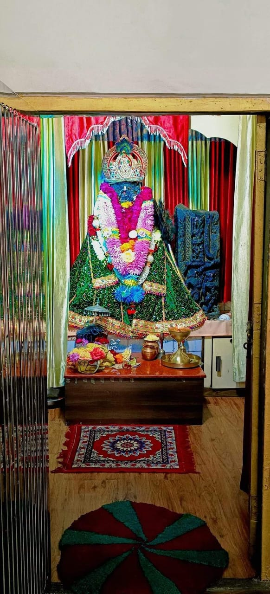
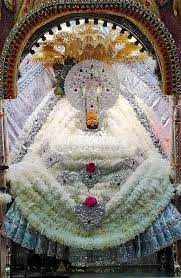
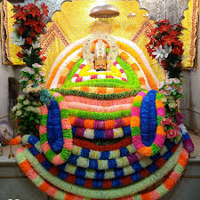
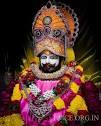
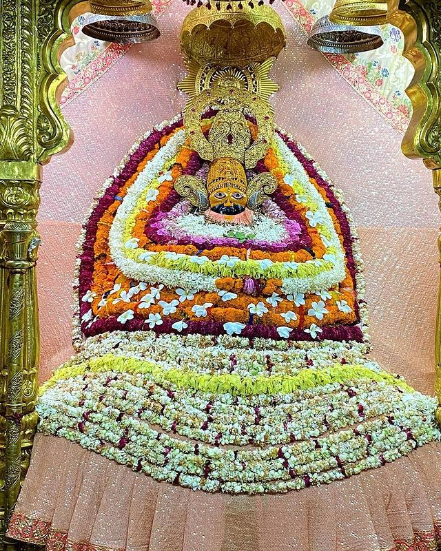
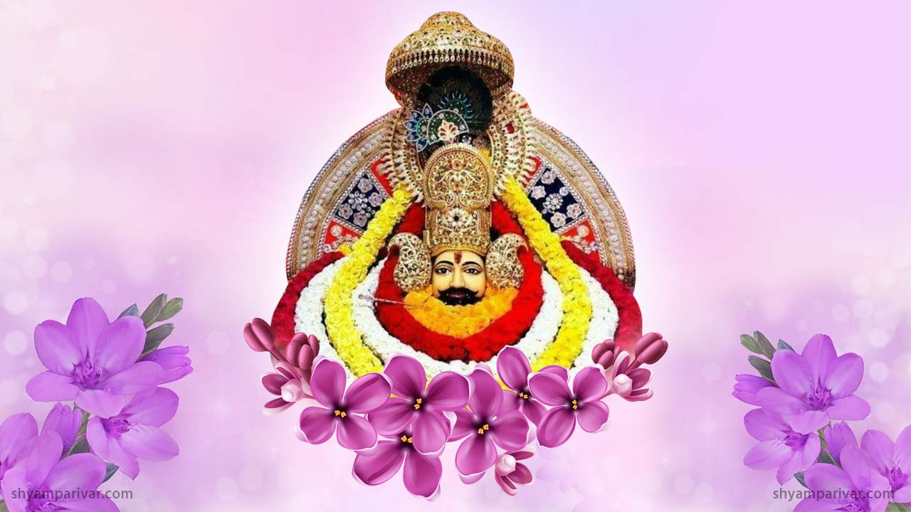